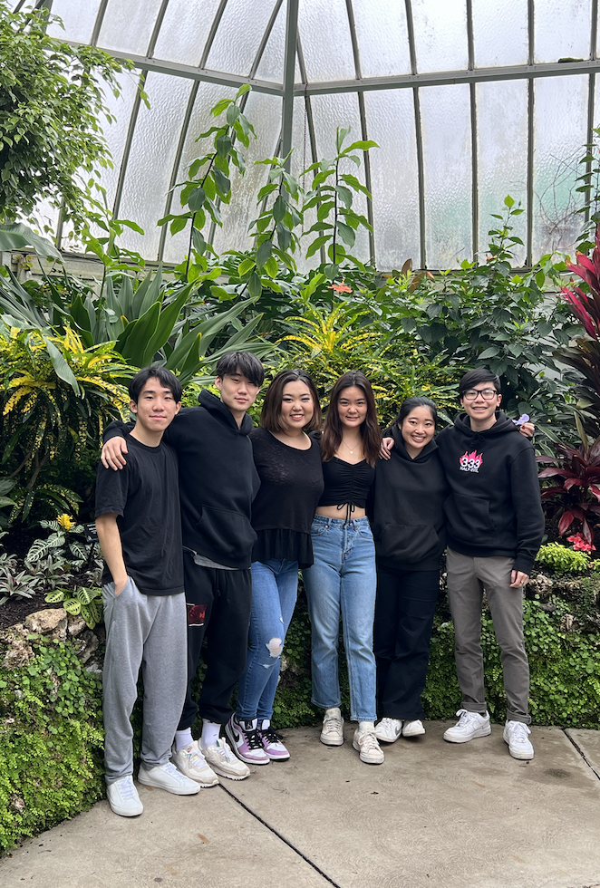

Chapter 3 About Us
In this section you can get to know more about the members of Coded in COBOL.
3.1 Yuchen Gao
Hello! My name is Yuchen Gao. I’m currently a master student pursuing a MBAn degree from the Ross School of Business at the University of Michigan. I have an undergraduate degree in Information Science from the School of Information at the University of Michigan.
I am passionate about transforming data into impactful business solutions and would hope to work in the analytics field after getting my master’s degree.
My favorite quote
> “All models are wrong, but some are useful”
> George E.P. Box
Interests and Hobbies - I spent the first 18 years of my life in Shanghai, but I also lived in Boston for two years before coming to Ann Arbor, MI. - In my free time I like to play tennis. I’m currently trying to improve my backhand and serving. - I’m a big fan of electronic music. My most favorite genres are techno house, future house, future bass. - My favorite novel is Neuromancer by William Gibson. - I’m a coffee enthusiast. My favorite kind of coffee bean is Panama Geisha. If you happen to go to any coffee shop that is offering Geisha I highly recommend you to try it.
More about Me… You can find more information about my professional experiences on LinkedIn and check out my past coding projects on Github.
3.2 Nikita Mamidi
I‚Äôm Nikita Mamidi üòÉ

A little bit about me:
I graduated from the University of Illinois at Urbana Champaign with a BS in Econometrics and Quantitative Economics. I look back fondly on my undergrad days where I was an Ambassador for the amazing Economics department, the Head Teaching Assistant for a Business Statistics Course and a Senior Associate at Illinois Business Consulting. GO ILLINI!
In today’s world organizations are coming up with so many fascinating data and tech driven solutions to previously insurmountable problems. I want to be part of such a force that impacts the world positively. To achieve those high-level data science skills, I recently started my Masters of Business Analytics at the Ross School of Business!

Recent Work Experience:
MSN Pharmaceuticals :- Sales and Marketing Executive
- Responsible for the South Korean, Japanese, Indonesian, Thailand and Taiwanese markets
- Determined potential partnerships in East Asia, established contacts & built relationships with key decision makers
- Collaborated with technical teams to ensure production and distribution of high-quality samples and final API
- Achieved the $3 million per month revenue target for the past 2 quarters
Fun Facts:


- I love to travel. Been to 20 countries. Next Destination - Mexico üá≤üáΩ
- Stock market trading is everything! I‚Äôm a day trader tho, I know I‚Äôm awful ü§≠
- Certified online shopaholic. But I also return the goods with equal speed
- I love watching (and dreaming of playing) in the NBA
- I enjoy snorkeling and scuba diving
- I‚Äôm terrified of all animals. Yes, including cute puppies and kittens ü§Ø
That‚Äôs enough about me üòÅ. Please reach out so I can learn more about You!
Contact - 217-898-6828
3.3 Ben Newman
Team: Coded in COBOL
Bio: Hi, I’m Ben. I was raised in Midland, MI. It’s in the middle-right part of the mitten. In high school, I was on the swim team (see below) and did cross country. I also attended University of Michigan from which I graduated last year (see below). Some things that bring joy to my life are friends, family, my pets (see below), skiing, fishing, and going to Michigan Football Games!!
My Education
- Saint Brigid Catholic School (Midland, MI USA)
- Herbert Henry Dow High School (Midland, MI USA)
- University of Michigan Ann Arbor (Ann Arbor, MI USA)
- B.S. Statistics
- University of Michigan Ann Arbor (Ann Arbor, MI USA)
- Masters in Business Analytics
My favorite foods.
- Pizza
- Orange Chicken
- Burgers

A picture of me (left) in my more fit days on the swim team (circa 2017).

A picture of my dogs Pearl (left) and Blue (right). They are Weimaraners.

This is me at the University of Michigan Commencement with my family in April, 2022.
3.4 Peiyue Sun
This is Peiyue Sun.
- I love Michigan Wolverines!
- I love Wisconsin Badgers!
Education:
- Wisconsin School of Business 2016 -> 2019 Risk Management & Insurance (BBA)
- Ross School of Business 2022 -> 2023 Business Analytics (MBAn)
Technology used:
- R
- Python
- Excel
Work Experience:
- 2 years at Willis Towers Watson risk consulting sector
- Insurance-linked securities valuation
- Financial Reserving for global insurance enterprises
Goal at MBAN:
- Unlock my potential in business analytics and project management
Hobbies:
- Snooker, Basketball, Texas Hold’em, Swimming, Running, Biking, and Trap music festivals

3.5 Winnifer Chen
Winnifer Chen
Email: winnifer@umich.edu
Phone: (980) 298-7184
LinkedIn: https://www.linkedin.com/in/winnifer/
Educational Background
I recently graduated with a Bachelor of Science in Economics with a minor in Statistics from the University of Michigan in April 2022. Currently, I am pursuing a Master of Business Analytics at the University of Michigan - Stephen M. Ross School of Business, with an expected graduation date of April 2023.


Fun Facts!
- I am from Ann Arbor, MI, but throughout my life, I have also lived in Charlotte, NC and Taipei, Taiwan.
- I come from a family of Wolverines! Both of my parents also attended graduate school at Michigan, and my younger sister is starting her freshman year this fall. GO BLUE!
- In my free time, I love to spend time outdoors, whether that is hiking, camping, or taking pictures of scenery. Check out some of the pictures I took: https://vsco.co/winniferchen/gallery
- I really enjoy rewatching music videos and performances by my favorite kpop groups. One of my dreams is to go to a kpop concert one day and sit in the very front section.
- Immersing myself in the world of kdramas is another way for me to wind down and relax after a long day.
- Something that I want to do more this year is trying new recipes and cooking more.



3.6 Jalal Mawri
Current Master of Business Analytics student at the Ross School of Business


Background
I was born and raised in Yemen, the old city of Sana’a, and I left the country in 2013 with my family and immigrated to the United States. I grew up playing Football, a.k.a soccer, and my favorite team was and still is Manchester United.
Education
- I graduated from the University of Michigan with High Honors in Biology and International Studies.
- During my first two years as an undergraduate student I had the opportunity to work on a research project at the Medical School where we researched preventive medical treatments for strokes.
- During my senior year I wrote my thesis on the current civil war in Yemen, and I researched the Islamic Movement of Ansar Allah which is currently leading the political scene in Yemen and the Arabian Peninsula.
Professional Experience
- After graduating I interned for the Muslim Public Affairs Council, and worked on a project that persuaded the Biden Administration to enforce the reopening of Sana’s Airport and push for a peace resolution between the parties involved in the war.
- After my internship, I started to work as a Data Analyst for Amazon.
- My plan after I graduate from Ross is to go back to Amazon and work as Business Intelligence Engineer.
Publications
Mawri, Jalal. “Ansar Allah in Yemen: History and Ideology.” Deep Blue Repositories, 1 Aug. 2021, https://deepblue.lib.umich.edu/handle/2027.42/169403.
Venugopal J, Wang J, Mawri J, Guo C, Eitzman D. Interleukin-1 receptor inhibition reduces stroke size in a murine model of sickle cell disease. Haematologica. 2021 Sep 1;106(9):2469-2477. doi: 10.3324/haematol.2020.252395. PMID: 32817286; PMCID: PMC8409048.